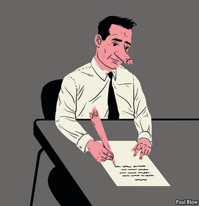

2021-01-05T12:36:03+00:00
Bartleby
巴托比
巴托比
Straight talking
实话实说
實話實說
What if executive memos were clear and honest?
高管的备忘录写得清晰又坦诚是什么样？
高管的備忘錄寫得清晰又坦誠是什麼樣？

FOLLOWING THE tragic yachting accident that killed my predecessor, Buck Passer, the board decided on a change of direction at Multinational United Subsidiary Holdings (MUSH). As the new chief executive, I would like to live up to my nickname, “Honest Harry” Hunter and tell it to you straight.
我的前任巴克·“没担当”·帕瑟在悲剧性的游艇事故中不幸身亡，之后董事会决定改变跨国联合附属控股公司（MUSH）的发展方向。作为新任首席执行官，我愿不负我“诚实哈里”的绰号，对各位实话实说。
我的前任巴克·“沒擔當”·帕瑟在悲劇性的遊艇事故中不幸身亡，之後董事會決定改變跨國聯合附屬控股公司（MUSH）的發展方向。作為新任首席執行官，我願不負我“誠實哈里”的綽號，對各位實話實說。
We had a dreadful 2020. To be fair, nobody could have reasonably expected the executive team to predict a global pandemic which resulted in widespread economic shutdowns. But by the same token, if managers aren’t at least partly responsible during the bad times, they shouldn’t take full credit for the good times. Most executives are riding on the backs of central bankers who have slashed the cost of capital and on technology pioneers who have made it easier to transact and communicate.
我们经历了糟糕透顶的2020年。说句公道话，没有人会期望高管团队能够提前预测到这次导致大范围经济停摆的全球疫情。但按照相同的逻辑，如果管理层在经济萧条时不用承担至少一部分责任，那么在顺风顺水时也不该把功劳全都揽到自己身上。多数企业高管现在不过是在搭顺风车，靠的是央行官员大幅降低资金成本，以及科技先锋把交易和沟通变得更便利。
我們經歷了糟糕透頂的2020年。說句公道話，沒有人會期望高管團隊能夠提前預測到這次導致大範圍經濟停擺的全球疫情。但按照相同的邏輯，如果管理層在經濟蕭條時不用承擔至少一部分責任，那麼在順風順水時也不該把功勞全都攬到自己身上。多數企業高管現在不過是在搭順風車，靠的是央行官員大幅降低資金成本，以及科技先鋒把交易和溝通變得更便利。
So, given that my fellow executives took bonuses in the boom years, we are slashing their salaries by half. That will give us more money to save jobs in the rest of the group. This may upset people in the C-suite and prompt some of them to leave. We will miss them—and wish them well finding a new job in the current labour market. We also know that many of you had to keep coming into our factories and warehouses during the pandemic while most of the office staff have been able to work from home. So as budgets are tight, we are making sure that the salaries of those essential workers keep pace with inflation this year. For everyone else, there will be a pay freeze.
因此，考虑到我的高管同事们在繁荣期已经拿过奖金，公司正把他们的薪水减半。这样我们就会有更多钱来保住其他员工的饭碗。这可能会让最高管理层感到不快，其中一些人可能会选择走人。我们会想念他们——并祝愿他们在眼下的就业市场找到新工作。我们也知道，疫情期间我们的大多数文职人员可以在家工作，但你们当中许多人还得继续回到工厂和仓库。所以，在预算吃紧之时，我们会确保这些关键岗位的员工今年的工资能跟上通胀。而其他所有人将被冻薪。
因此，考慮到我的高管同事們在繁榮期已經拿過獎金，公司正把他們的薪水減半。這樣我們就會有更多錢來保住其他員工的飯碗。這可能會讓最高管理層感到不快，其中一些人可能會選擇走人。我們會想念他們——並祝願他們在眼下的就業市場找到新工作。我們也知道，疫情期間我們的大多數文職人員可以在家工作，但你們當中許多人還得繼續回到工廠和倉庫。所以，在預算吃緊之時，我們會確保這些關鍵崗位的員工今年的工資能跟上通脹。而其他所有人將被凍薪。
Another cost-saving measure will be the elimination of my predecessor’s use of management consultants. I have nothing against the profession, which is full of bright people. But if my executive team needs advice on how to do their jobs, that raises the question of why they were hired in the first place.
另一个节省成本的措施将是解聘我前任雇用的管理顾问们。我对这个职业并不反感，他们之中确实也有很多能人。但如果我的高管团队需要别人的建议才知道如何开展工作，那就要问问，公司当初请他们来做什么？
另一個節省成本的措施將是解聘我前任僱用的管理顧問們。我對這個職業並不反感，他們之中確實也有很多能人。但如果我的高管團隊需要別人的建議才知道如何開展工作，那就要問問，公司當初請他們來做什麼？
What about 2021? There is no point in making economic predictions; the best approach is to clear up the mistakes made in the past. First of all, my predecessor bought too many companies without considering whether they would fit well with the rest of the group. Chief executives like acquisitions: to expand their empires and give them news to announce when they are talking to investors. Time the purchase right and you can boost both earnings and the share price.
那么2021年会如何？预测经济前景没什么意义，最好的办法还是清理过去犯下的错误。首先，我的前任收购了太多公司，却没有考虑它们是否契合集团内的其他业务。首席执行官都喜欢收购，这可以扩大他们的商业帝国版图，在面对投资者时又有新消息可宣布。把握好收购时机可以让盈利和股价都升高。
那麼2021年會如何？預測經濟前景沒什麼意義，最好的辦法還是清理過去犯下的錯誤。首先，我的前任收購了太多公司，卻沒有考慮它們是否契合集團內的其他業務。首席執行官都喜歡收購，這可以擴大他們的商業帝國版圖，在面對投資者時又有新消息可宣布。把握好收購時機可以讓盈利和股價都升高。
But all too often these are vanity purchases, like the middle-aged man who buys a Porsche to reclaim his lost youth. When combining companies, it is possible to make savings in areas like procurement but these are often more than offset by the loss of morale that occurs when managers try to mesh organisations with completely different cultures. So we are not going to make any acquisitions in 2021. Instead, we are going to see if some of our subsidiaries can be spun off as stand-alone organisations. They can probably manage their businesses far better than we can.
但这些收购太多时候只是为了满足虚荣心，和一个中年男人买辆保时捷来重拾逝去的青春没什么两样。公司合并可能会在采购等方面节省开支，但当管理层试图融合文化截然不同的组织时往往会导致士气低落，最后得不偿失。因此我们不打算在2021年收购任何公司。相反，我们还会看看是否能剥离一些子公司，让它们独立运作。它们管理自己业务的能力恐怕要比我们强得多。
但這些收購太多時候只是為了滿足虛榮心，和一個中年男人買輛保時捷來重拾逝去的青春沒什麼兩樣。公司合并可能會在採購等方面節省開支，但當管理層試圖融合文化截然不同的組織時往往會導致士氣低落，最後得不償失。因此我們不打算在2021年收購任何公司。相反，我們還會看看是否能剝離一些子公司，讓它們獨立運作。它們管理自己業務的能力恐怕要比我們強得多。
Speaking of management changes, too much staff time is taken up by meetings. From now on, team leaders will have a 15-minute catch-up every morning; if there is important news, they can message employees directly. Most of the staff should not be expected to attend an internal meeting more than once a month. That should give them more time to meet the important people, our suppliers and customers, or just to get on with their jobs.
说到管理上的改变，员工在会议上耗费了太多时间。从今天开始，团队主管每天早上可以花15分钟时间开个沟通晨会；如果有什么重要消息，可以直接通知员工。大多数员工每月参加的内部会议不应超过一次。这会让他们有更多时间去见重要的人——我们的供应商和客户，或者单纯去完成他们的工作。
說到管理上的改變，員工在會議上耗費了太多時間。從今天開始，團隊主管每天早上可以花15分鐘時間開個溝通晨會；如果有什麼重要消息，可以直接通知員工。大多數員工每月參加的內部會議不應超過一次。這會讓他們有更多時間去見重要的人——我們的供應商和客戶，或者單純去完成他們的工作。
Other changes are required to end the gobbledygook that plagued the previous regime. We will no longer have a “human resources” department: our employees are people, not resources. That section has been renamed personnel. Similarly, the whole concept of a “thought leadership” division is both pretentious and Orwellian; clients are not impressed by this waffle and in order to save money I will shut our unit down.
之前的管理架构中充斥着各种官样文章，必须通过改革清除。“人力资源”部门将不复存在：我们的员工是人，不是资源。该部门现已更名为人事部。同样，“思想领导力”部门这整个概念装腔作势又专横无理。客户对这种花俏的废话并不感冒，出于节省经费的考虑，我会把这个部门砍掉。
之前的管理架構中充斥着各種官樣文章，必須通過改革清除。“人力資源”部門將不復存在：我們的員工是人，不是資源。該部門現已更名為人事部。同樣，“思想領導力”部門這整個概念裝腔作勢又專橫無理。客戶對這種花俏的廢話並不感冒，出於節省經費的考慮，我會把這個部門砍掉。
Finally, there is a lot of talk about corporate purpose, and a lot of grandiose language tends to be used by other executives. So let me tell you the purpose of this business under my leadership. It is to create a company that provides products and services that customers are eager to buy. In turn, that depends on ensuring that our employees are both well-rewarded and committed to their tasks. If we can achieve those goals, then the returns to shareholders will look after themselves.
最后，现在很多人热衷于谈论企业使命，许多高管的言语也甚为浮夸。那么我来告诉你，在我的领导下这家公司的使命是什么。我们要打造一家公司来提供客户渴望购买的产品和服务。反过来，这取决于我们的员工能否获得良好的回报，并全心投入自己的工作。如果我们能实现这些目标，那么股东的回报自然也水到渠成。
最後，現在很多人熱衷於談論企業使命，許多高管的言語也甚為浮誇。那麼我來告訴你，在我的領導下這家公司的使命是什麼。我們要打造一家公司來提供客戶渴望購買的產品和服務。反過來，這取決於我們的員工能否獲得良好的回報，並全心投入自己的工作。如果我們能實現這些目標，那麼股東的回報自然也水到渠成。
So enjoy your holiday break—you have earned it. I can’t promise you that things will be better in 2021. But if they aren’t, it won’t be for lack of effort from me or the rest of the management team. Thanks for all you have done this year.
所以，请好好享受这个假期吧——这是你们应得的。我不能保证2021年情况会好转。但如果事情不尽人意，我和管理团队也已经竭尽所能了。感谢大家这一年来的所有付出。
所以，請好好享受這個假期吧——這是你們應得的。我不能保證2021年情況會好轉。但如果事情不盡人意，我和管理團隊也已經竭盡所能了。感謝大家這一年來的所有付出。
Best wishes, Harry Hunter
致以最美好的祝愿，哈里·亨特
致以最美好的祝願，哈里·亨特